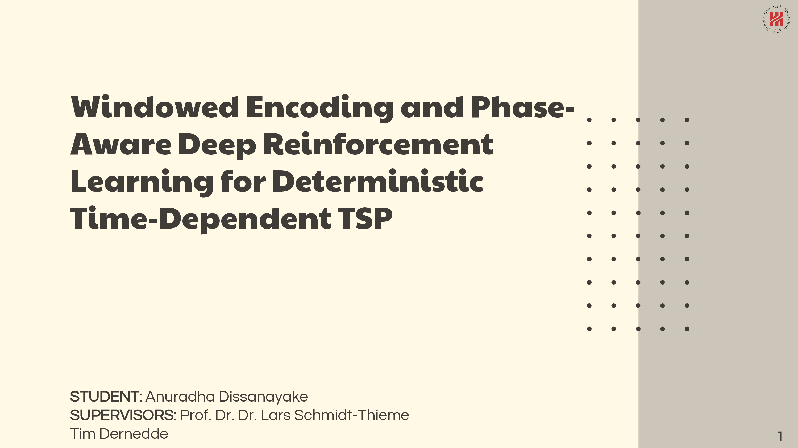

Master's thesis · University of Hildesheim · 2026
Deep Reinforcement Learning for the Time-Dependent Travelling Salesman Problem
Route planning when travel times change with traffic through the day. I extended an attention-based policy network with windowed, time-sliced traffic encoding, step-aware decoding and cost-aware gating, trained with REINFORCE on real Beijing traffic data.
6.8%better tours than baselines
~97,000×faster inference than classical solvers
RealBeijing traffic data
PyTorchAttentionREINFORCECombinatorial optimisation